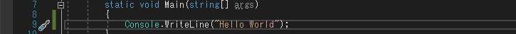

C#とは
C#(シーシャープ)は Microsoft が開発したプログラミング言語です。Microsoft の Visual Studio というIDE[Integrated Development Environment](統合開発環境)と呼ばれるアプリケーションを使って開発するのが一般的で、その場合は Visual C# と呼ばれます。
Microsoft が開発したプログラミング言語であるため Windows 向けのアプリケーション開発に適していますが、Webアプリケーションや Mac OS 、 iOS 、Android 、 Linux 向けのアプリケーション開発も可能です。
C#には .NET(ドットネット) Framework というアプリケーションを実行・開発するための土台となるソフトウェアも必要ですが、Windows搭載のPC[Personal Computer]であれば元からインストールされていたり Microsoft から 無償でダウンロードすることができます。